Unit bar charts represent data as discrete cells, where each cell represents
one unit of data. They follow the same x/y conventions as ggplot2::geom_bar(),
ggplot2::geom_col(), and ggplot2::geom_histogram():
geom_unit_bar()counts observations (one row = one cell), likeggplot2::geom_bar(). Mapx(oryfor horizontal bars) to the grouping variable;fillto colour by a second variable.geom_unit_col()uses pre-computedyvalues, likeggplot2::geom_col(). Fractional values are supported:y = 3.7draws 3 full unit cells (height 1 in data space) plus a partial cell of height 0.7 at the top.
For binning continuous data, see geom_unit_histogram().
All position adjustments supported by ggplot2::geom_bar() work here:
"stack" (default), "dodge", "fill",
position_stack(reverse = TRUE), etc. Although "fill" rarely makes sense
for these geoms; see the examples below for why.
Usage
geom_unit_bar(
mapping = NULL,
data = NULL,
stat = "count",
position = "stack",
...,
just = 0.5,
radius = grid::unit(0, "pt"),
orientation = NA,
width = 1,
cell_size = 1,
cell_padding = 0.05,
cell_count_cap = 10000,
lineend = "butt",
linejoin = "mitre",
na.rm = FALSE,
show.legend = NA,
inherit.aes = TRUE
)
geom_unit_col(
mapping = NULL,
data = NULL,
stat = "identity",
position = "stack",
...,
just = 0.5,
radius = grid::unit(0, "pt"),
orientation = NA,
width = 1,
cell_size = 1,
cell_padding = 0.05,
cell_count_cap = 10000,
lineend = "butt",
linejoin = "mitre",
na.rm = FALSE,
show.legend = NA,
inherit.aes = TRUE
)Arguments
- mapping
Set of aesthetic mappings created by
ggplot2::aes(). Forgeom_unit_bar(),x(oryfor horizontal bars) is required. Forgeom_unit_col(), bothxandyare required. Mapfillto colour segments.- data
A data frame.
- stat
The statistical transformation to use. Override the default to use a different stat, e.g.
stat = "bin"for a tiled histogram.- position
A position adjustment to use on the data. Default
"stack"stacks bars on top of each other. Use"dodge"for side-by-side bars,"fill"for proportional stacking, orposition_stack(reverse = TRUE)to reverse the stacking order.- ...
Other arguments passed to
ggplot2::layer().- just
Justification of the bar relative to its x position.
0.5(default) centres the bar onx,0aligns the left edge,1aligns the right edge. Same asggplot2::geom_bar().- radius
Corner radius for each cell as a
grid::unit(). Defaultgrid::unit(0, "pt")gives sharp corners. Only used with linear coordinates; non-linear coordinates (e.g.ggplot2::coord_polar()) fall back to sharp corners.- orientation
The orientation of the layer. Default (
NA) is guessed from the aesthetic mapping. Set to"x"for vertical bars (value on y) or"y"for horizontal bars (value on x). Same asggplot2::geom_bar().- width
Bar width in data units. Default
1. With the package defaults (width = 1,cell_size = 1),coord_equal()already renders cells as squares. For non-defaultwidthorcell_size, see theposition = "dodge"subsection below for the generalcoord_equal(ratio = ...)formula (it also covers the non-dodgen_groups = 1case). Same asggplot2::geom_bar().- cell_size
Number of data units one cell represents. Default
1(one cell per unit, the original "isotype" / pictogram pattern). Set to a larger value to aggregate units, e.g.cell_size = 1e4so each cell stands for one thousand. Each cell is thencell_sizetall in data space. With the package defaults (width = 1,cell_size = 1)coord_equal()already renders cells as squares; for non-defaultcell_size(or underposition = "dodge") thecoord_equal(ratio)must scale withcell_size— see theposition = "dodge"subsection below for the formula. The value axis still shows the original data values; pair withscale_*_continuous(labels = label_cells(cell_size))to show cell counts instead.- cell_padding
Inset applied per side of each cell, in CSS
paddingstyle. On linear value scales the vertical inset is a fraction ofcell_size(data space); on non-linear value scales (log10,sqrt, ...) it becomes a fraction of each cell's panel extent so the gap looks visually uniform under compression – see "Log and other non-linear value scales" below. The horizontal inset is always a fraction of the bar'swidth(the bar axis is never the transformed one). Labels are in canonical (vertical-bar) orientation; underorientation = "y"orcoord_flip()the on-screen roles swap, but element 1 always pads the value axis and element 2 always pads the bar axis.length 1 (default
0.05) – same fraction on all four sides.length 2, unnamed –
c(vertical, horizontal);verticalis the inset between vertically-stacked cells,horizontalis the inset between each cell and its bar's left/right edge.named (length 1 or 2) – positional independence; allowed names are
"vertical"and"horizontal". A missing axis falls back to the default0.05. Soc(horizontal = 0.2, vertical = 0.1),c(vertical = 0.1, horizontal = 0.2), andc(0.1, 0.2)are all equivalent. Unknown names error rather than silently default – a typo would otherwise be hard to spot in the rendered plot.
Each element must be finite and in
[0, 0.5). Setcell_padding = 0for cells that touch (the borderless isotype style); increase it for a waffle-like grid of separated cells. The inset is applied uniformly to every cell, including the cells at the bar's outer edges – each cell represents one data unit, so cells must render at identical size regardless of whether they sit at the floor, in the middle, or at the top of a bar. As a consequence the bar's outer edges sit slightly inside the data extent: bycell_padding * cell_sizevertically andcell_padding * widthhorizontally on linear scales, and proportionally less on non-linear value scales (where the inset is panel-proportional rather than data-proportional).- cell_count_cap
Soft cap on the total number of cells drawn per panel. A defensive safety net: this geom renders one grob per cell, so very large
yvalues can freeze the graphics device. When the cap is exceeded, the layer falls back to solid bars (one rectangle per bar) and emits a warning. Default1e4; passInfto disable. For largeyyou might want to set a largercell_size, see Examples.- lineend
Line end style for the cell border when
colouris set. One of"round","butt"(default), or"square". Same asggplot2::geom_bar().- linejoin
Line join style for the cell border. One of
"round","mitre"(default), or"bevel". Same asggplot2::geom_bar().- na.rm
If
FALSE(default), rows with missingyare dropped with a warning. Non-positiveyvalues are kept:y = 0produces an empty segment, andy < 0stacks cells downward from the baseline.- show.legend
logical. Should this layer appear in the legends?
- inherit.aes
If
FALSE, overrides the default aesthetics.
Value
A ggplot2::layer() object that can be added to a ggplot2::ggplot().
Note
Add ggplot2::coord_equal() to ensure cells render as squares.
Use coord_equal(ratio = r) for non-square cells.
Cell rendering caveats
A few details are easy to overlook. See the Caveats worth knowing
section of vignette("ggpointless", package = "ggpointless") for worked
examples and visuals.
position = "fill"collapses every stack to a single cell (the unit semantics disappear). Use"stack"or"dodge"instead.position = "dodge"shrinks each sub-bar towidth / n_groups. To restore square cells, pair withcoord_equal(ratio = width / (n_groups * cell_size))for vertical bars, or the inverseratio = n_groups * cell_size / widthfor horizontal. Withpreserve = "single",n_groupsis the max groups per cluster, notnlevels(fill).Non-linear value scales (
log10,sqrt, ...): cells tile in data space, so the "1 cell =cell_sizeobservations" contract is preserved. Cell heights become non-uniform under compression.Tiny panels: the default 5 % gap can collapse below 1 px and cells visually fuse. Enlarge the panel or reduce
cell_size.Polar coordinates: cells become annular segments. Rounded corners are dropped under polar (see
radius).
Performance
Cost scales with total cell count, not input rows — one grid rect per
cell. The defensive cell_count_cap = 1e4 falls back to plain bars
when exceeded; pass Inf to disable. For intrinsically large data
(populations, currencies, ...), set cell_size to aggregate units
into single cells. Rounded corners (radius > 0) add a roundrectGrob
per cell and are the most expensive path; leave radius at its default
for large plots.
See also
ggplot2::geom_bar() and ggplot2::geom_col() for the regular
(non-unit) counterparts. geom_unit_histogram() for binning continuous
data.
Aesthetics
geom_unit_bar() understands the following aesthetics. Required aesthetics are displayed in bold and defaults are displayed for optional aesthetics:
| • | x | |
| • | y | |
| • | alpha | → NA |
| • | colour | → via theme() |
| • | fill | → via theme() |
| • | group | → inferred |
| • | linetype | → via theme() |
| • | linewidth | → via theme() |
| • | width | → 0.9 |
stat_count() understands the following aesthetics. Required aesthetics are displayed in bold and defaults are displayed for optional aesthetics:
| • | x or y | |
| • | group | → inferred |
| • | weight | → 1 |
Learn more about setting these aesthetics in vignette("ggplot2-specs").
Examples
library(ggplot2)
# Basic example: count observations with geom_unit_bar()
p <- ggplot(mtcars, aes(reorder(cyl, cyl, length))) +
labs(y = NULL)
p + geom_unit_bar()
#> `geom_unit_*()` works best with a fixed-ratio coordinate.
#> ℹ Add `+ coord_equal()` to keep cells square.
#> This message is displayed once per session.
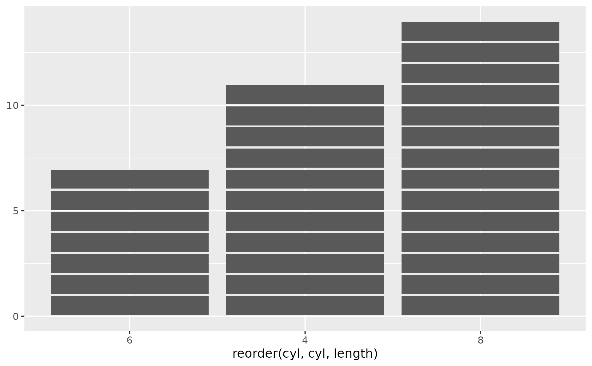
# Let's make cells look square by adding coord_equal()
p <- p + coord_equal()
p + geom_unit_bar()
# Rounded corners are supported too
p + geom_unit_bar(radius = unit(5, "pt"))
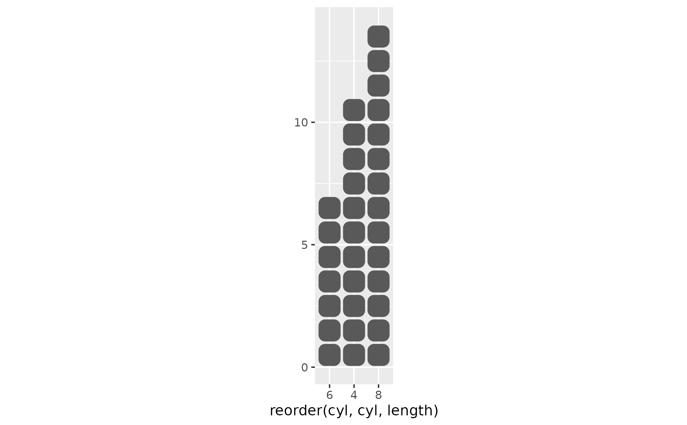
# When a variable is mapped to fill
# aesthetic, bars are stacked by default
p + geom_unit_bar(aes(fill = factor(vs)))
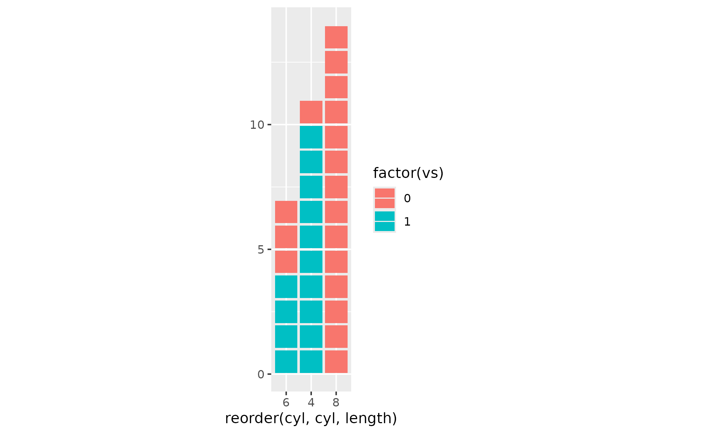
# But you might want bars to be dodged
p +
geom_unit_bar(
aes(fill = factor(vs)),
position = position_dodge(preserve = "single")
) +
coord_equal(ratio = 1 / 2)
#> Coordinate system already present.
#> ℹ Adding new coordinate system, which will replace the existing one.
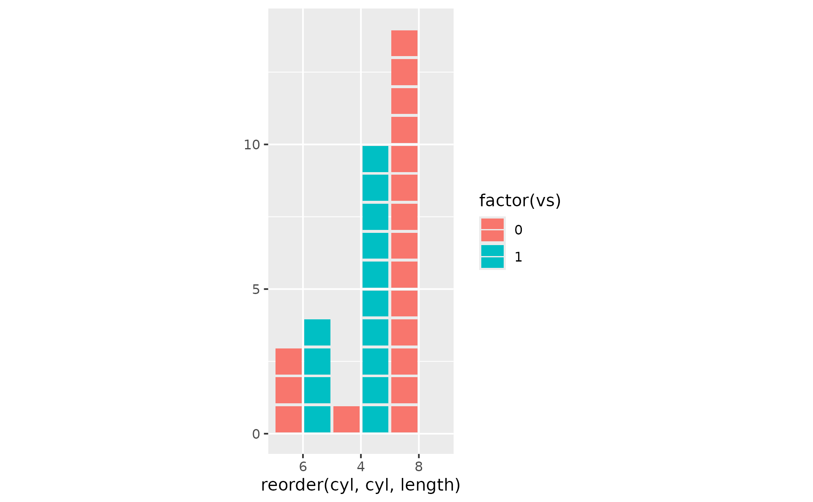
# Dodging + facets: getting the coord ratio right.
# With `preserve = "single"` every sub-bar is sized to
# `width / max_groups_per_cluster` -- the largest number of fill levels
# appearing at any *one* x-cluster, NOT the total nlevels(fill). In
# `penguins` `fill = species` has three levels, but each island holds
# at most two species (Biscoe: Adelie + Gentoo; Dream: Adelie + Chinstrap;
# Torgersen: Adelie only), so the effective n_groups is 2.
# The square-cell formula for horizontal bars is
# `ratio = n_groups * cell_size / width`, hence `ratio = 2 * 1 / 1 = 2`
# (not 3, which is what nlevels(fill) would suggest).
if (getRversion() >= "4.5.0") {
p2 <- ggplot(datasets::penguins, aes(y = island))
p2 +
geom_unit_bar(
aes(fill = species),
radius = unit(1, "pt"),
position = position_dodge(preserve = "single"),
colour = "#333333",
na.rm = TRUE
) +
labs(x = NULL, y = NULL) +
facet_wrap(~year, ncol = 1) +
# max 2 species per island -> ratio = 2, not 3
coord_equal(ratio = 2) +
theme(legend.position = "bottom")
}
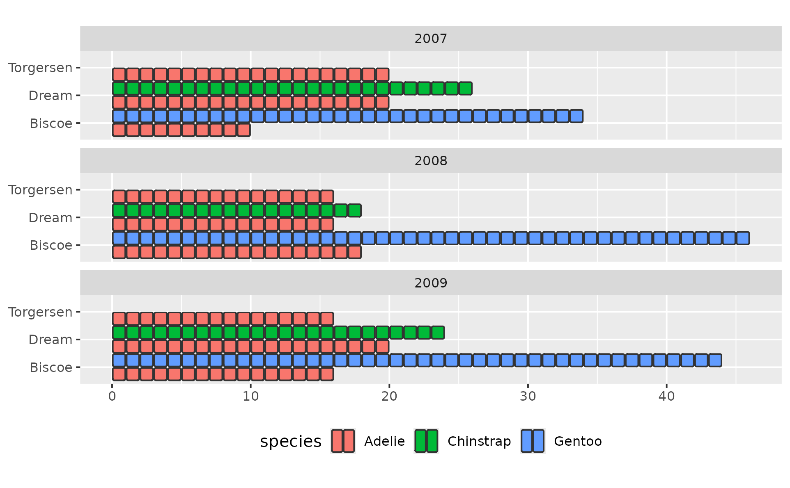
# Note: position dodge2 adds extra padding by default, but provides
# an option to set this to 0; use the cell_padding argument
# instead for full control of vertical and horizontal padding
p +
geom_unit_bar(
aes(fill = factor(vs)),
position = position_dodge2(preserve = "single", padding = 0),
cell_padding = c(0.025, 0.1)
) +
coord_equal(ratio = 1 / 2)
#> Coordinate system already present.
#> ℹ Adding new coordinate system, which will replace the existing one.
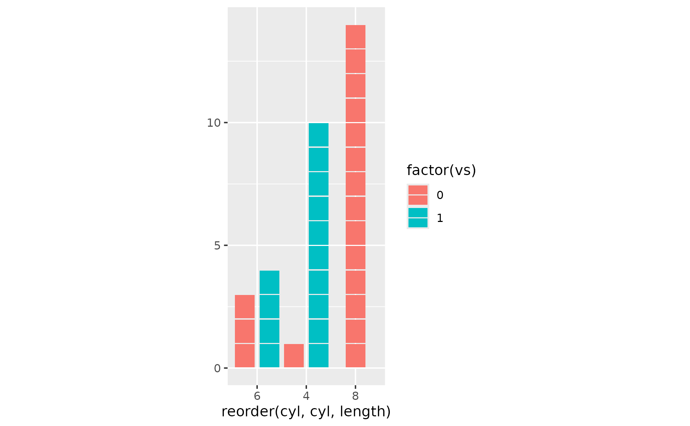
# Increase the cell padding (default is 0.05)
p + geom_unit_bar(cell_padding = c(
"vertical" = 0.1,
"horizontal" = 0.05
)
)
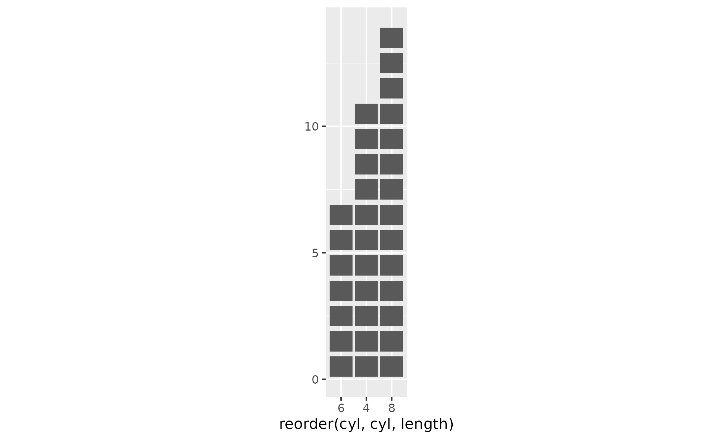
# When you map the categorical to y aesthetic,
# the orientation is auto-detected
ggplot(mtcars, aes(y = reorder(cyl, cyl, length))) +
geom_unit_bar() +
coord_equal()
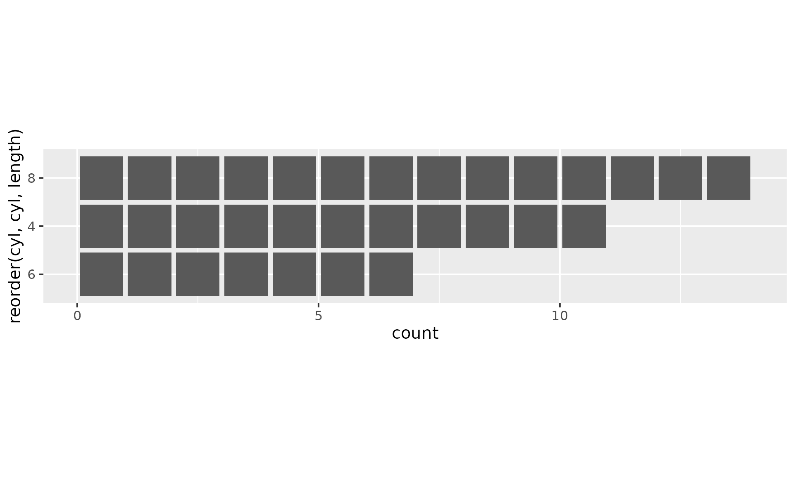
# `scale_*_binned()` belongs on the *mapped continuous variable*, not on the
# count axis. Bin a continuous variable into discrete intervals, then count
# observations per bin -- a unit-cell histogram in two lines:
ggplot(iris, aes(y = Sepal.Length)) +
# the continuous variable (Sepal.Length) lives on y; binning it ...
geom_unit_bar() +
# ... discretises y into intervals so `stat = "count"` can tally each one.
scale_y_binned()
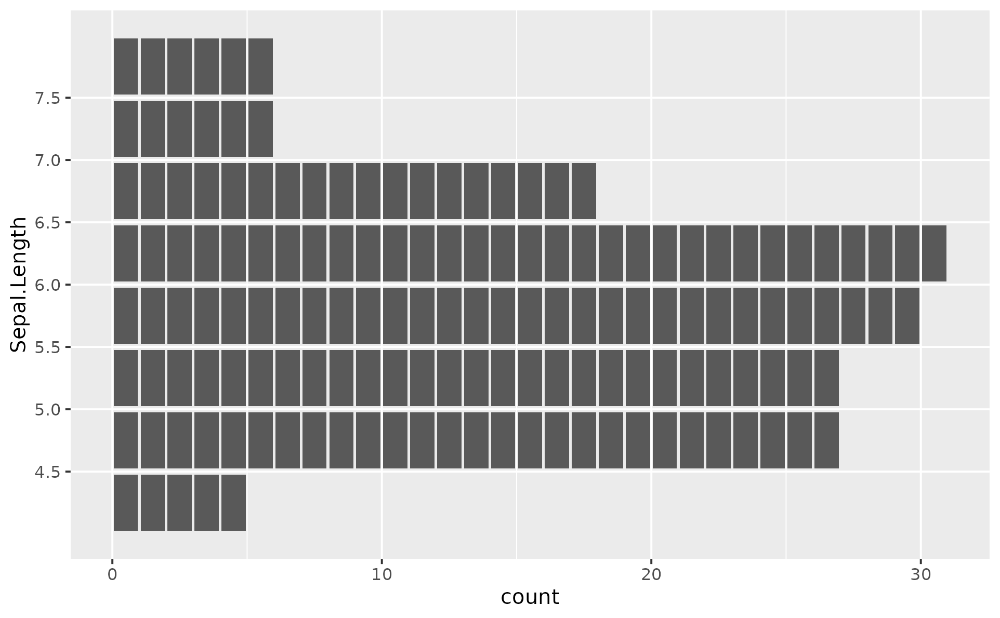
# Using `scale_y_binned()` on the count axis instead would render an empty
# plot -- the count axis is already discrete via `stat_count`, so binning
# it again has nothing to bin.
# Plot pre-computed counts with geom_unit_col() (like geom_col() does)
# by default 1 cell represents 1 observation
df <- data.frame(x = c("A", "B", "C"), y = c(10, 12, 8))
ggplot(df, aes(x, y)) + geom_unit_col()
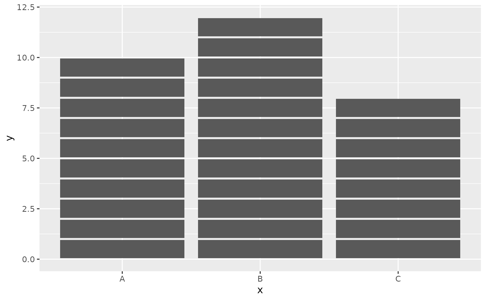
# Too many cells might freeze the graphics device. When cell_count_cap
# is exceeded, the geom falls back to its ggplot2 sibling with a warning.
# For large y, divide at the aes level (e.g. `aes(x, y / 1e3)`) so each
# cell represents a meaningful number of observations.
df <- data.frame(x = c("A", "B", "C"), y = c(10000, 12000, 8000))
ggplot(df, aes(x, y)) + geom_unit_col()
#> Warning: Refusing to tile 30000 cells (cap: 10000).
#> ℹ Falling back to solid bars.
#> ℹ Set `cell_size` so each cell aggregates more units (e.g. `cell_size = 1e3`);
#> pair with `scale_*_continuous(labels = label_cells(cell_size))` to relabel
#> the axis in cell counts.
#> ℹ Or pass `cell_count_cap = Inf` to disable the cap entirely.
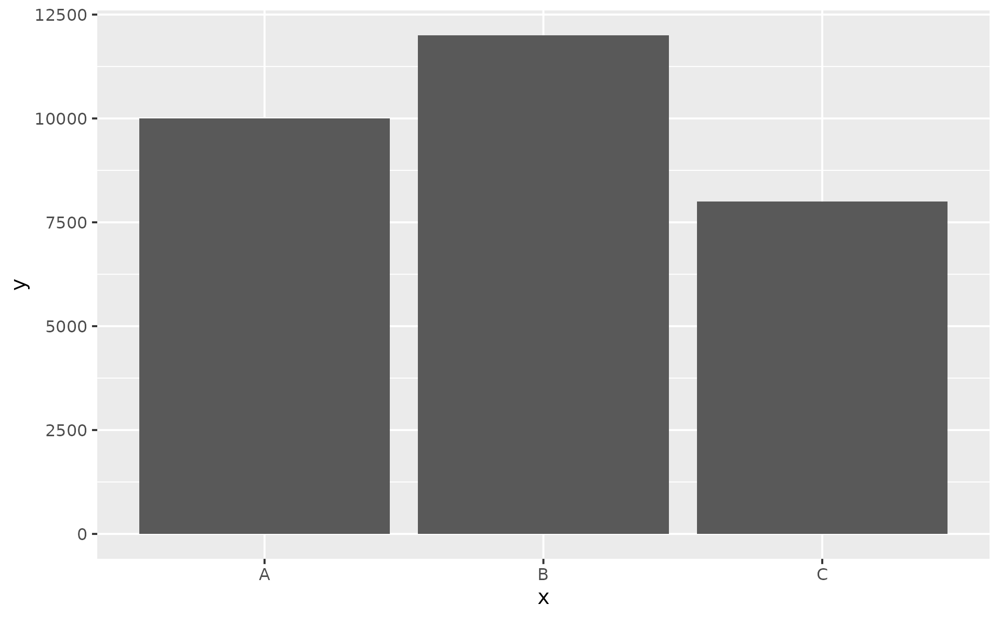
# The aes-level division pattern:
cs <- 1000
ggplot(df, aes(x, y / cs)) +
geom_unit_col() +
labs(caption = sprintf("Each cell represents %d observations", cs)) +
coord_equal()
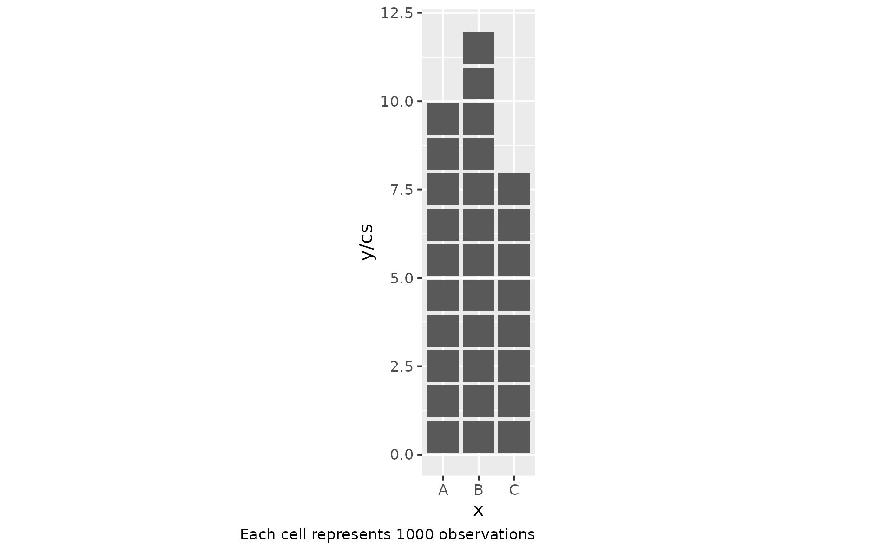
# Flat cells with rounded corners via coord_equal(ratio = ...)
ggplot(df, aes(x, y / cs)) +
geom_unit_col(radius = unit(5, "pt")) +
labs(caption = sprintf("Each cell represents %d observations", cs)) +
coord_equal(ratio = 1 / 10)
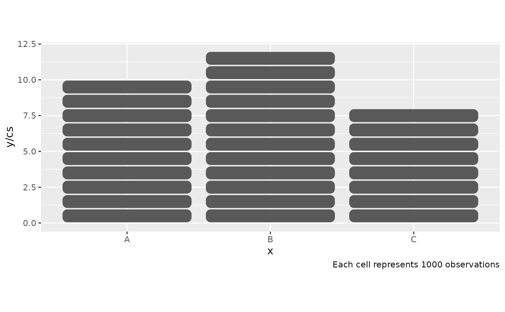